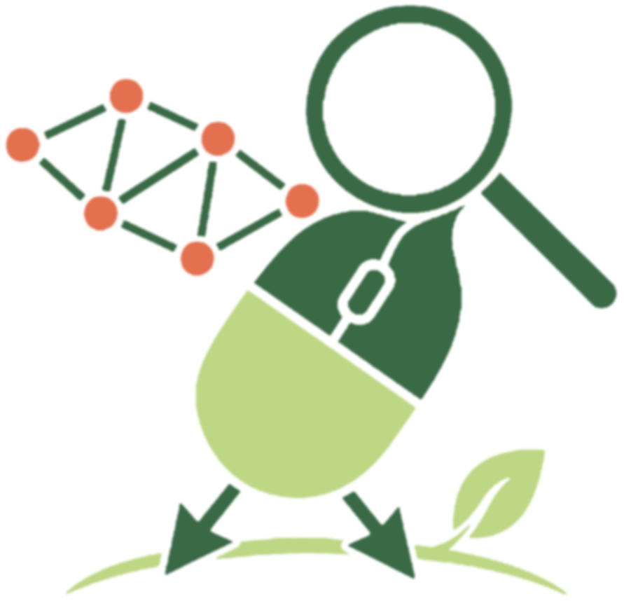

MétricasUsuarios
Avistamientos
Top 5 publicaciones
- Cóndor Andino | Ave de presa / Carroñera | 14:30 hrs | 25/08/2026 | Cajón del Maipo
- Martín Pescador | Ave acuática / Cazadora | 17:45 hrs | 24/08/2026 | Humedal de Batuco
- Loica | Ave paseriforme / Cantora | 09:15 hrs | 22/08/2026 | Parque Bicentenario
- Tucúquere | Rapaz nocturna | 20:10 hrs | 20/08/2026 | Reserva Nacional Río Clarillo
- Picaflor Gigante | Ave paseriforme / Cantora | 11:20 hrs | 18/08/2026 | Farellones